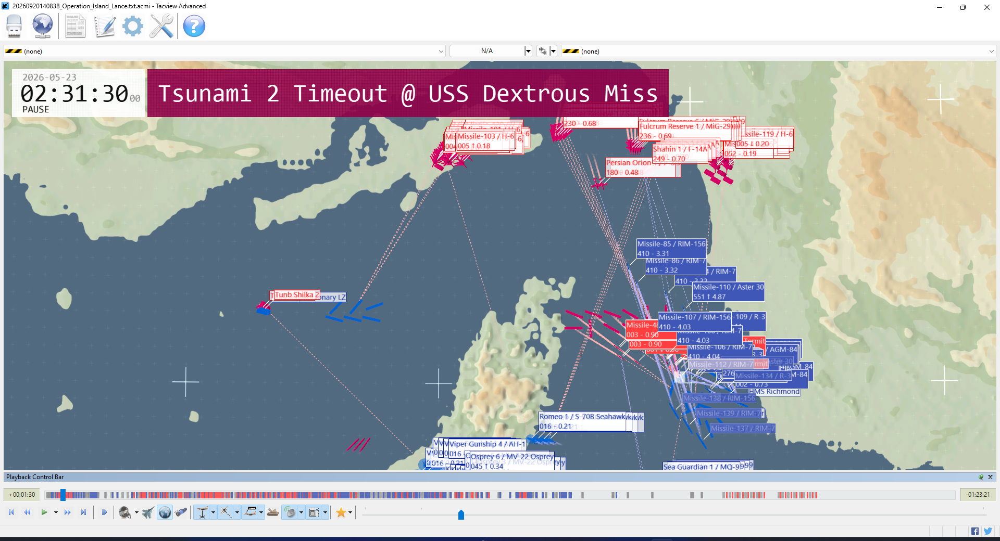
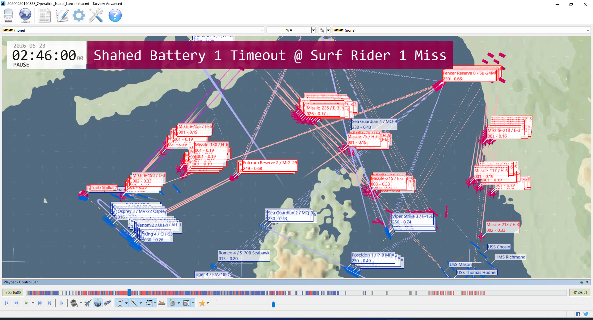
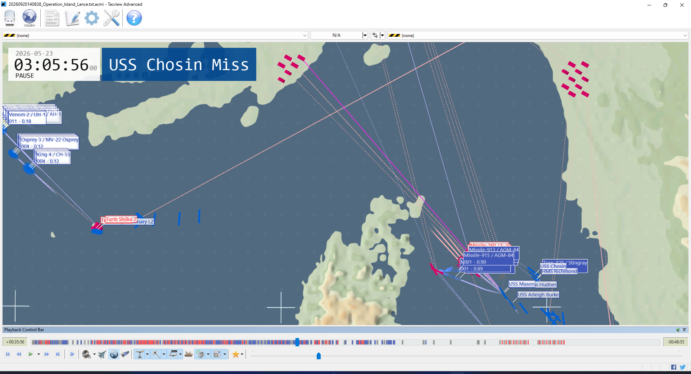
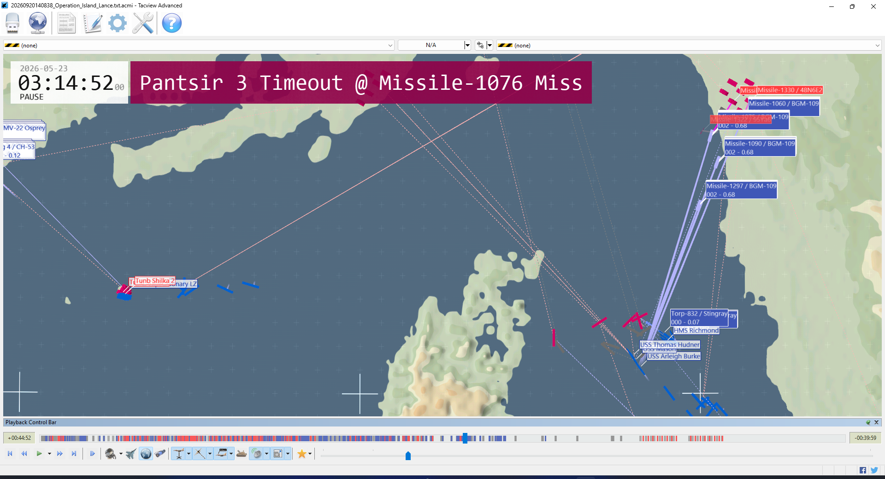
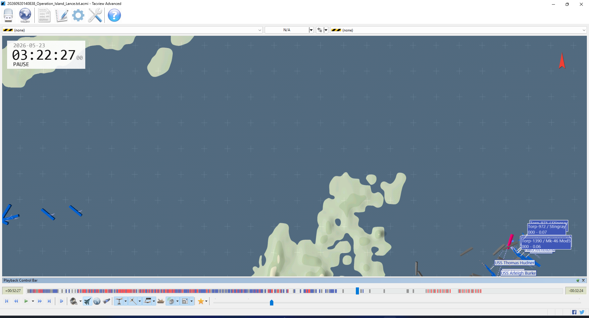
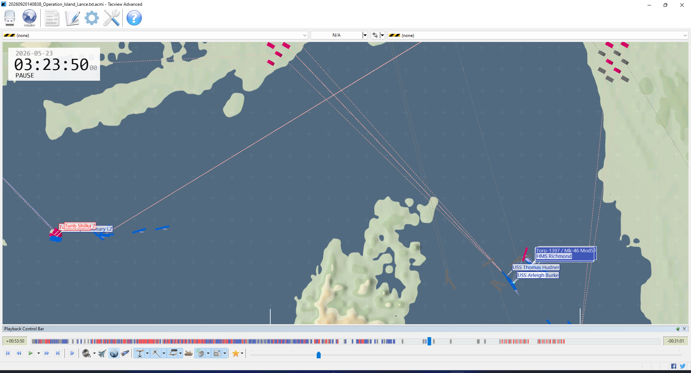

Contact begins across the theater
Coalition packages sortie while Iranian aircraft, raiders, coastal missiles, and OWA drones begin simultaneous attacks.
The coalition broke Iran’s opening air and surface attack, preserved every convoy ship and neutral merchant, and dismantled most of the maritime screen. But the island defenses remained untouched, coastal suppression stopped one kill short, and a late friendly-fire ASW cascade turned a tactical success into an operationally incomplete result.
Four of six BLUE sub-goals met. The compound objective did not complete because island defense neutralization failed (0/4 required) and coastal suppression reached 6/7. No valid current-session score file was written before the scenario ended.
The coalition won the engagements it actually prosecuted. The shortfall came from mission execution and task initialization, not from an inability to defeat the Iranian order of battle.
BLUE achieved decisive local exchange ratios in the air and at sea: all four Shahin F‑14s, both Persian Orions, one reserve Fulcrum, and twelve of seventeen named maritime targets were destroyed. The sealift and civilian traffic escaped intact. The mainland strike then removed all three Bastions, S‑300 North, and two Khordad batteries.
The six Greater Tunb defense targets all survived. Separately, only six of twelve coastal targets were destroyed against a threshold of seven. The formal objective was a compound “all” goal, so success in four branches could not compensate.
Status is reconstructed from the current log and ACMI against the scenario manifest. Protect goals count named survivors; destroy goals count explicit health-zero events.
All six auxiliaries survived; threshold required five.
All ten named amphibious/LZ assets survived; landing completion itself was not scored.
Tunb Khordad, Watch, both Shilkas, and both armor units remained.
Twelve named combatants destroyed, including both frigates and seven Kaman craft.
Three Bastions, S‑300 North, and Khordad Coast 2/3 destroyed.
No neutral merchant loss appears in either current-session source.
Captured directly from Tacview Advanced using the supplied ACMI. Click any frame for a full-screen inspection.






Tacview event banners sometimes describe weapon timeout events rather than the nearby platform kill; captions use the game combat log and object-parent relationships to resolve attribution.
Mission clock is authoritative. Filters only change this view; they do not alter the assessment.
Coalition packages sortie while Iranian aircraft, raiders, coastal missiles, and OWA drones begin simultaneous attacks.
A Noor strike destroys the Avenger-class MCM—the first confirmed BLUE loss.
Persian Orion 1/2, Shahin 1–4, and Fulcrum Reserve 3 are destroyed by ship-based long-range SAMs.
A RGM‑84F Harpoon removes the first named maritime objective target.
The F‑15E is repeatedly hit by 76 mm HE‑MOM fire and destroyed after entering close-range defenses.
Naval 114 mm gunfire converts moderate and heavy damage into a confirmed kill.
A Sayyad‑3 destroys the S‑70B Seahawk near the island battle area.
Damavand, Jamaran, Tsunami 1, Scimitar, Falakhon, Neyzeh, Tabarzin, Shamshir, and Khanjar fall to guns and Harpoons.
A Stingray attributed to HMS Richmond hits USS Chosin, causing light damage.
Bastion 1/3/2, S‑300 North, and Khordad Coast 2/3 are destroyed in sequence.
After earlier gun damage, a 127 mm HE‑PD hit produces the twelfth maritime-objective kill.
A Mk‑46 deployed from a USS Thomas Hudner RUM‑139 ASROC destroys the Type 23.
A second Thomas Hudner ASROC/Mk‑46 causes moderate damage to the cruiser.
The ACMI ends after 5,091 seconds. No current-session goal or score artifact is written.
Only explicit current-session destruction events are counted. Weapon objects, cleanup deletions, and stale prior-run summaries are excluded.
| Unit | Time | Cause |
|---|---|---|
| USS Dextrous | 02:31:45 | Noor |
| Viper Strike 1 | 02:46:00 | 76 mm HE‑MOM |
| Romeo 4 | 02:59:09 | Sayyad‑3 |
| HMS Richmond | 03:22:27 | Friendly Mk‑46 |
| USS Chosin | Moderate | Friendly Stingray + Mk‑46 |
| Category | Units | Total |
|---|---|---|
| Air | Shahin 1–4; Persian Orion 1–2; Fulcrum Reserve 3 | 7 |
| Surface | Khanjar, Falakhon, Scimitar, Zolfaghar, Neyzeh, Tabarzin, Shamshir; Tsunami 1–3; Jamaran; Damavand | 12 |
| Coastal | Bastion 1–3; S‑300 North; Khordad Coast 2–3 | 6 |
All fifteen named merchant vessels survived the recording.
Counts below are unique weapon entities declared in the ACMI. Timeout outcomes totaled 158 kill, 49 hit, and 872 miss, but those outcomes include weapon-on-weapon interactions and must not be read as platform casualty totals.
The logs distinguish scenario-design defects from player/tactical decisions. Both matter, but they require different fixes.
The Python error log records 14 GroundStrike and 9 Land NameErrors. Those failures explain why the island assault did not prosecute its six defense targets or receive a credible landing completion.
Friendly torpedoes were allowed to engage coalition surface tracks. Add side validation before ASW release and prevent self-side contacts from entering the torpedo target list.
Viper Strike 1 was killed by repeated 76 mm fire. Enforce standoff launch ranges and egress waypoints for fixed-wing strike packages.
The lodgment branch only protected assets; it did not require transports to land. Add a timed landing-state or LZ-proximity condition so “survived” cannot substitute for “inserted.”
The strike achieved six confirmed site kills and stopped one short. Either allocate a second wave to Khordad Coast 1/Pantsir or lower the threshold if six is the intended operational effect.
The Python output repeatedly reassigned aircraft to USS America, USS Mason, and Tunb LZ. Emit only on destination change; the present volume obscures actionable events.
The report deliberately separates verified telemetry from inference and excludes artifacts that predate this playthrough.
20260920140838_Operation_Island_Lance.txt.acmiObject identity, positions, weapon parentage, engagement outcomes, timestamps, screenshots, and 5,091.05-second duration.
Logs/log.txt · closed 14:46:38Authoritative named damage/destruction messages and weapon types for this session.
operation_island_lance.manifest.jsonObjective rosters, thresholds, roles, and original 100 BLUE / 65 RED / 15 neutral force allocation.
Logs/pyerr.txt · pyout.txtTask NameErrors and repeated alternate-landing behavior.
goal_status.txt · damage_summary.csvBoth were last written at 10:06:34, before the supplied 10:08:38 recording began. They belong to an earlier run.
confirmed ≠ inferred ≠ unscored“Destroyed” requires explicit health-zero/log evidence. Objective completion is reconstructed; overall game score is unavailable.